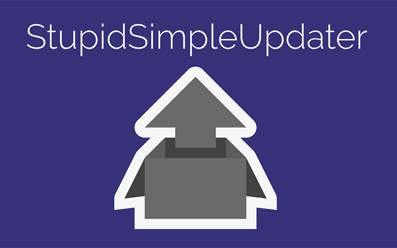
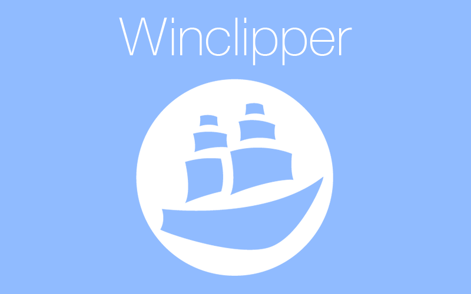

Adium Night Mode
Night Mode is a Retina display ready menu bar icon theme for Adium. It looks great with the dark menu bar theme, and also works when you aren't using dark mode!
BetterPonymotes for Safari

BetterPonymotes for Safari is a port of the popular emote viewer for reddit. It is designed to run natively on Safari without any additional userscripts or plugins.
Cursed-Breakout

Cursed-Breakout is the first project that I ever published. It is a simple Breakout clone that was built with C using the ncurses library.
StupidSimpleUpdater

StupidSimpleUpdater (SSUP) is an easy to use updater for Windows applications that only requires a static web host to manage.
Winclipper

Winclipper is a better clipobard manager for Windows. Store text for later use, and paste it when you need it again. Super fast, and Unicode compliant.